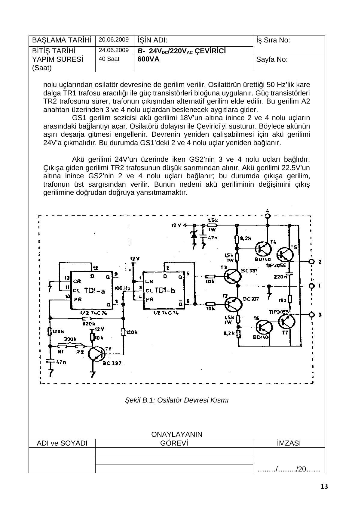
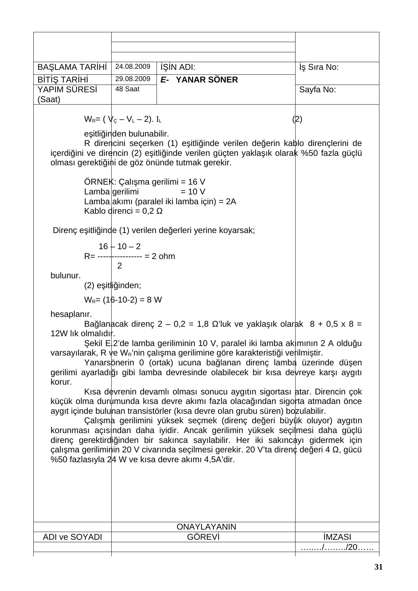

· STAJ
INTERN Summer Internship: TCDD Electronics Research Center internship logbook (2009), regulator, inverter, flasher and battery charger devices
STAJ – Yaz Stajı · 11.09.2009 · 14.11.2026
This post is the text of a 2009 internship logbook (49 pages) from a summer internship carried out at the TCDD Electronics Research Center (EAM) Directorate in Ankara. The logbook contains an introduction to the unit, a day-by-day work schedule, and, for eight devices, sections on introduction, connection to the circuit, operating principle, adjustment and parts list. For an internship at the same unit in 2013, see the TCDD EBOM internship report. Personal names, signatures and the stamp were removed from the logbook (the organization chart page was removed from the PDF). Since the device information consists of the unit's own technical descriptions, the source of the post is TCDD EAM. When the parts lists were converted from tables to text, the row order may have been scrambled; the original pages can be downloaded as a PDF at the end of the post for the figures and the correct layout.
Workplace introduction
The Electronics Research Center Directorate was established by the TCDD Board of Directors' authorization decision no. 23/221 dated 07.06.1973. Its task is to carry out research and development, repair and manufacturing work on existing and future electrical-electronic systems within TCDD in the best and most economical way, with a rational organization. The Center carries out its work through the Research and Development Technical Directorate and the Manufacturing and Repair Technical Directorate, within the framework of regulations, statutes and other legislation. (The organization chart includes the director, the deputy director for technical affairs, and the personnel and administrative affairs, purchasing, materials, maintenance and signalling units; personal names have been removed.)
Daily distribution schedule of the practical work
According to the schedule on pages 3-4 of the logbook, the work lasted 40 working days (320 hours) between 15 June and 11 September 2009 and was carried out on the following devices:
| Device | Dates (2009) | Days |
|---|---|---|
| A- GDI-24V 100A regulator | 15–19 June | 5 |
| B- 24V DC/220V AC inverter 600 VA | 20–24 June | 5 |
| C- Curamportor supply and battery charger | 25–28 June, 17–18 August | 6 |
| D- 100 W inverter | 19–23 August | 5 |
| E- Flasher | 24–29 August | 6 |
| F- 24VDC/220VAC, 20W controlled electronic ballast | 30 August – 3 September | 5 |
| G- Q33 overvoltage protection relay | 4–7 September | 4 |
| H- 12V–3A battery charger | 8–11 September | 4 |
Each day, 8 hours were worked. The workplace supervisor and student signature fields in the schedule are blank.
Third-party source note: This content is a sample/template internship logbook belonging to TCDD EAM; it is shared for archival and nostalgic purposes with the source credited. It will be removed at the request of the rights holder.
A- GDI-24V 100A regulator (dynamo regulator)

A.1. INTRODUCTION
The 24 V supply used in railway coaches for lighting and other purposes is obtained from an arrangement consisting of a regulator (dynamo) and batteries. When the coach is stationary, the 24 V is taken directly from the batteries. When the coach is moving, the dynamo comes into play. The voltage produced by the dynamo charges the batteries and supplies the other circuits. The dynamo voltage depends on the rotational speed of the dynamo and on the field current. For this reason, the dynamo output is not applied directly to the batteries and other devices. The dynamo output voltage must be kept constant. This is achieved by the regulator. The regulator controls the field current so as to keep the dynamo voltage constant at a specified value. The field current is high when the dynamo rotates slowly and low when it rotates fast. The regulator also prevents the dynamo current limit from being exceeded.
The regulators made at EAM are built with semiconductor components (transistors, diodes, integrated circuits, etc.). They have no moving parts. The voltage and current settings are made during manufacture. The regulators can be used with all dynamos having a field resistance greater than 4.5 Ω.
Table 1 gives the technical specifications of the GDI-24V 100A regulator.
Table 1: Technical specifications of the GDI-24V 100A regulator
| Specification | Value |
|---|---|
| Charging voltage adjustment range | 22 V – 32 V |
| Charging voltage (set during manufacture) | 29.5 V ± 0.5 V |
| Dynamo current adjustment range | 50 A – 150 A |
| Dynamo current (set during manufacture) | 100 A ± 10 A |
| Minimum dynamo field resistance | 4.5 Ω |
| Operating temperature | −10 °C to +60 °C |
| Weight | 21.5 kg |
| Dimensions | 21.5 cm × 35 cm × 13 cm |
A.2. USE
A.2.1- CONNECTION TO THE CIRCUIT
The connection arrangement of the GDI-24V 100A regulator is shown in Figure A.1.
The figure does not show the dynamo, battery and lamp-circuit fuses that must be on the main panel, nor the other details of the main panel. The regulator must be connected to the main panel so as to achieve the arrangement in Figure A.1.
Figure A.1: Connection diagram of the regulator. As can be followed from the circuit, the +D, +F and –D terminals are connected to the +, F (field winding) and – terminals of the dynamo, respectively. The +B terminal goes to the + terminal of the battery, and the +L terminal goes to the lamp circuits. The conductors connected to the +D, +B and +L terminals must be cables or busbars with a cross-section of at least 3 mm², and those connected to the +F and –D terminals must have a cross-section of at least 4 mm². To keep the connection resistance low, the terminal screws must be tightened thoroughly.
Incorrect connection may damage the device.
After the connections have been made, the device is put into operation by pressing the automatic circuit breaker on the side of the device.
A.2.2. MAINTENANCE
Since the voltage and current settings of the regulator are made during manufacture, it requires no adjustment under normal conditions. One must only not forget to reset the automatic field winding fuse located on the side face on the +D terminal side. If this fuse has tripped, no current will flow through the field winding and the dynamo will not produce voltage.
Tripping of the field fuse, batteries not charging, or batteries losing water are signs of abnormal operation of the device. In this case, the regulator should be tested on the test device. During the test, the dynamo voltage should be 29.5 V, and the lamp and battery voltage should be around 28 V. The dynamo current should be able to rise up to 90 A as the load is increased, provided that these voltages remain constant. If the voltages differ from the values given above, or if the voltages drop markedly before the dynamo current reaches 90 A, the device should be sent for repair.
If the device is not performing its function while connected to the coach, the connections are checked and its fuse is inspected. If the fuse has tripped, it is reset; if it trips again or the device continues not to work, the device is removed and sent for repair.
If the batteries are to be charged externally, if the lamps are to be tested with an externally applied voltage, or if a dynamo test is to be carried out, all connection terminals of the regulator must be disconnected from the main panel before these operations.
A.3. OPERATING PRINCIPLES
As can be seen in the block diagram in Figure A.2, the regulator consists of the following units: Sawtooth Wave Generator, Voltage Sensor, Current Sensor, OR Circuit, Comparator, Driver and Power Stage, together with the power supply that provides the necessary voltages to these units.
Figure A.2: Regulator block diagram. As can be seen in the circuit diagram in Figure A.3, the operational amplifiers IY1 and IY2 produce the waveforms VA and VB shown in the same figure. These waveforms are summed through resistors R8, R9 and R10 to produce the waveform VC. The voltage (waveform) VC is the output of the Sawtooth Wave Generator. Figure A.3.a: Voltage regulator circuit diagram. Figure A.3.b: Voltage regulator circuit diagram. The voltage sensor consists of resistors R17 and R18. Resistor R17 is adjusted precisely so as to obtain, at the output of the OR circuit, a voltage VK comparable with the voltage VC when VH=VALT (VALT = between 29 V and 29.5 V). R17 is adjusted as follows:
Terminals 1, 4 and 5 of the regulator are short-circuited and 29 V is applied to these terminals. The value of R17 is chosen so that the voltage VK equals the lower limit of VC.
The current sensor unit, consisting of T3, D9, R23 and R24, actually senses the voltage across diode D11 and resistor R31 (about 1 V). This voltage is amplified by transistor T3. The current sensor is adjusted with resistors R31 and R19. To adjust resistor R19, 28 V is applied to terminals 1 and 5. For the appropriate value of R19, VK must equal the lower limit of VC when the voltage V4-5 is -1.1 V. R19 must be adjusted after R17 has been adjusted. R31 is adjusted on the test device. Limiting of the field current must begin when the dynamo current reaches 100 A. This is achieved by connecting terminal 4 to the appropriate tap of R31.
The output voltage VK of the OR circuit, consisting of transistor T1 and diodes D7 and D8, follows the higher of the voltages VD and VE.
In the comparator, built around operational amplifier IY3, the voltage VC is compared with the voltage VK.
When the voltage VH is less than the dynamo voltage VALT (VALT = 29.0 - 29.5 V) and the current drawn by the dynamo is less than 100 A, the voltage VF (a) appears at the comparator output (at the base of driver transistor T2) and the voltage VG (a) appears at the Driver and Power Stage output (at the collector of power transistor T5 and across the dynamo field winding); excess current is supplied to the dynamo field winding, causing the dynamo to raise its voltage.
When the voltage VH is greater than VALT and less than VÜST (VÜST = 29.5 V - 30.0 V) and the current drawn by the dynamo is less than 100 A, the device starts its regulating action, and the voltages VF (b) at the comparator output and VG (b) at the Driver and Power Stage output are obtained. In this way, pulsed current is supplied to the field winding and the dynamo voltage is kept constant at this level.
When the voltage VH is greater than VÜST, or when the current drawn by the dynamo is above 100 A, the voltage VF (c) is obtained at the comparator output and the voltage VG (c) at the Driver and Power Stage output. In this way, no current is supplied to the dynamo field winding and the dynamo stops delivering current. The dynamo voltage and current are limited to the values VÜST and 100 A, respectively.
Since this process takes place quickly, when the dynamo voltage rises or the current drawn from the dynamo increases, the current supplied to the dynamo field winding is controlled and the dynamo voltage is thereby regulated.
The function of diode D11 is to prevent the batteries from discharging through the dynamo when they are not being charged. Diode D12 is fitted to protect the device if the dynamo is connected in reverse in any way.
A.4. PARTS LIST
R1 = 1 KΩ ½ W R3 = 470 Ω ½ W R5 = 10 KΩ ½ W R7 = 1 KΩ ½ W R9 = 10 KΩ ½ W R11 = 1 MΩ ½ W R13 = 10 KΩ ½ W R15 = 10 KΩ ½ W R17 = Selected resistor R19 = Selected resistor R21 = 10 KΩ ½ W R23 = 1 KΩ ½ W R25 = 1.5 KΩ
1W
R27 = 1 KΩ
7W
R29 = 220 Ω
11 W
R31 = 5 mΩ 100 W R2 = 10 KΩ ½ W R4 = 100 KΩ ½ W R6 = 10 KΩ ½ W R8 = 100 KΩ ½ W R10 = 10 KΩ ½ W R12 = 10 KΩ ½ W R14 = 470 Ω ½ W R16 = 100 KΩ ½ W R18 =
1 KΩ ½ W
R20 = 10 KΩ ½ W R22 = 100 Ω ½ W R24 = 1.5 KΩ 1 W R26 =
1 KΩ 7 W
R28 = 220 Ω 11 W R30 = 220 Ω 11 W T1 = BC 107 B T3 = BC 177 T5 = TIP 2955 T2 = BC 107 B T4 = BD 140 IY1 = TL 1709 IY3 = TL 1709 IY2 = TL 1741 D1 = BA 147 100 D3 = BZY 85 C7 V5 Zener D5 = IN 4002 D7 = BA 147 100 D9 = IN 4002 D11 = AEG D 240/200B-5E21 D2 = BA 147 100 D4 = BZY 85 C7 V5 Zener D6 = BZY 85 C7 V5 Zener D8 = BA 147 100 D10 = 5A 600 D12 = 20 A C1 = 0.22 µF 250V C2 = 0.22 µF 250V C3 = 0.22 µF 250V C4 = 100 µF 40V Electrolytic C5 = 0.01 µF 100V C6 = 0.01 µF 100V Fuse = 6A ## B- 24VDC/220VAC INVERTER
600VA
B- 24 V DC / 220 V AC inverter, 600 VA

B.1. INTRODUCTION
Converts 24 V DC to 220 V AC. The output power is 600 VA. It also charges the battery supplying the device from the 220 V mains. The device also contains automatic arrangements that make the devices to be supplied run from the mains when mains voltage is present and via the inverter when it is absent.
B.2. USE
The input and output connections of the device are made to the terminals visible when the rear cover is opened. As shown on the terminal strip, these are the 220 V input, the 220 V output and the battery terminals. On the front of the device there are switches and fuses that complete these connections. The 220 V input switch and the fuse below it are on the 220 V mains input, the 220 V output switch and its fuse are on the 220 V output, and the battery switch is on the battery circuit. The socket on the front panel is in parallel with the 220 V output terminals. The meter switch and knob allow selection and reading of either the battery voltage or the output voltage. Before the rear connections of the device are made, all switches on the front must be set to the off position. When making the rear connections, particular care must be taken to connect the battery terminals correctly. Reverse connection may damage the device. After all connections have been made, first the 220 V input switch and then the 220 V output switch should be turned on. If 220 V mains voltage is present, the lights of both switches will come on. If they do not, the fuses may have tripped. Turning on the battery switch puts the device into operation.
B.3. OPERATING PRINCIPLE
The circuit diagram of the device, divided into sections, is given below. Terminals 1 and 2 are connected to the 220 V mains voltage, terminals 3 and 4 to the devices to be supplied, and terminals 5 and 6 to the 24 V battery.
When 220 V mains voltage is present and switch A1 (220 V input) is on, contactor K is energized. As a result, the 220 V mains voltage is applied to transformer TR2 through contacts k1 and k2 of the contactor and terminals 3 and 4 of GS2. The voltage taken from the other winding of the transformer is rectified by the diodes in the power transistor block and filtered by the 10000 µF capacitor. This voltage passes through the control circuit, goes out through terminals 5 and 6 via switch A4, and charges the battery.
Since contactor K is energized, its contact k3 is open. Consequently, the voltage to the voltage sensor circuits GS1 and GS2 and to the oscillator circuit is cut off. If switch A2 (220 V output) is on, 220 V mains voltage is supplied through terminals 3 and 4 to the devices to be supplied.
When the 220 V mains voltage is cut off, contactor K drops out, contacts k1 and k2 open, and contact k3 closes. The battery voltage is applied through switch A4 and diode D in the regulator. This voltage feeds the GS1 and GS2 circuits. Through terminals 2 and 4 of GS1, voltage is also supplied to the oscillator circuit. The 50 Hz square wave produced by the oscillator is applied to the power transistor block via transformer TR1. The power transistors drive transformer TR2, and an alternating voltage is obtained from the transformer output. This voltage goes through switch A2 to the devices to be supplied via terminals 3 and 4.
When the battery voltage falls below 18 V, voltage sensor GS1 opens the connection between terminals 2 and 4. This silences the oscillator and hence the inverter. In this way, excessive discharge of the battery is prevented. For the circuit to operate again, the battery voltage must rise to 24 V. In this case, terminals 2 and 4 of GS1 are reconnected. While the battery voltage is above 24 V, terminals 3 and 4 of GS2 are connected.
The voltage going to the output is taken from the low-turns tap of transformer TR2. When the battery voltage falls below 22.5 V, terminals 2 and 4 of GS2 are connected; in this case, the output voltage is supplied from the upper winding of the transformer. The reason for this is to avoid reflecting changes in battery voltage directly into the output voltage.
Figure B.1: Oscillator circuit section
600VA
Figure B.2: Protection circuit section. Figure B.3: Regulator controller section
600VA
Figure B.4: Voltage sensor I section. Figure B.5: Voltage sensor II section ## C- CURAMPORTOR SUPPLY AND BATTERY CHARGER
C- Curamportor supply and battery charger

C.1. INTRODUCTION
This device is designed to supply the curamportor communication system, to charge the batteries in the system, and to automatically control the charging of the batteries.
The device consists of 3 main sections. The system supply circuit is a regulated power supply of 24.2 Volts – 5 Amperes, and the battery supply circuit is a regulated power supply of 26.7 Volts – 5 Amperes. The automatic control circuit connects the battery to charge when the battery voltage is below 22 V, cuts off charging when the battery voltage rises above 26 V, and ensures that the system is supplied from the battery the moment the mains voltage is cut off. When no battery is connected to the device, the battery supply output voltage is zero and the battery-disconnected LED (red) lights. When the battery is connected to the device and its voltage is greater than 26 V, charging is off and the battery-disconnected LED again lights. When the battery is connected to the device and its voltage is less than 26 V, the battery is charging and the battery-empty LED (green) lights. If the mains voltage is not cut off, the mains LED (green) lights. Fused switches are provided on the device to control the mains voltage and the output voltages. An ammeter each is provided to see the currents drawn by the battery and the system from the circuit, and a voltmeter to measure the battery and system voltages. When the mains voltage (220 V) is cut off, the system automatically starts being supplied from the battery. When the mains returns, the battery and system are again supplied from the device. When there is a fault in the system supply, the device supplies both the battery and the system. When there is a fault in the battery supply, the battery cannot be charged but the system continues to be supplied from the device.
C.2. OPERATION AND USE
As seen in Figure C.1a, the device contains two similar independent regulated sources. The circuit contains 3 independent bridge rectifiers, one supplying the main power and the other two supplying the 723 circuits.
T3 and T8 are drivers, and T1, T2, T6 and T7 are power transistors. R2, R3 and R23, R24 are used to balance the parallel-connected power transistors; R4 and R24 are used to obtain the voltage required for current limiting. The battery voltage (26.7 V) is set with P2 and P3; the system supply voltage (24.2 V) with P7 and P8; and the maximum supply-circuit currents (5.5 A) with P1 and P6. Diode D17 is used to protect against the battery voltage affecting the circuit.
When 220 V AC is applied to the device, RL2 is energized. If the system switch is also turned on, the system begins to be supplied. The battery switch is turned on. If the battery voltage is less than 26 V, the comparator (LM321) output becomes logic '0'; T4 goes to cut-off and T5 to saturation. RL1 is energized and the battery begins to charge. When the battery voltage is greater than 26 V, the comparator output becomes logic '1'; T4 goes to saturation and T5 to cut-off. RL1 is de-energized and battery charging is cut off. When the battery voltage falls below 22 V, RL1 is energized and the battery begins to charge again. The charge-start voltage (22 V) is set with P5, and the charge-cutoff voltage (26 V) with P4.
AND BATTERY CHARGER When the mains voltage is cut off, RL2 is released and the battery automatically begins supplying the system through RL2.
C.3. ADJUSTMENT OF THE DEVICE
The mains switch is turned on to apply 220 V AC to the circuit. The battery and system switches are also turned on.
C.3.1. ADJUSTMENT OF THE SYSTEM SUPPLY CIRCUIT
The system supply voltage is set to 24.2 V with P7 and P8. An adjustable resistor is connected to the system supply output and the current is limited to 5.5 amperes with P6. The adjustment is made so that the output voltage is 24 V while 4.5 A is drawn from the circuit.
C.3.2. ADJUSTMENT OF THE CONTROL CIRCUIT
The anode of diode D11 is removed from the printed circuit, and a voltage is applied between the anode of the diode and the ground of the device.
With the relay released, the voltage is brought to 22 V and the relay (RL1) is made to pull in with P5. After the relay pulls in, the voltage VA is set to 6.1 V with P4.
With the relay pulled in, the voltage is raised to 26 V. At this point the relay is made to release with P4. When the relay releases, the voltage VA is set to 9 V with P5.
In this way, the charge-start voltage (22 V) is set with P5 and the charge-cutoff voltage (26 V) with P4.
C.3.3. ADJUSTMENT OF THE BATTERY SUPPLY CIRCUIT
With RL1 pulled in, the battery supply output is set to 26.7 V with P2 and P3. An adjustable resistor is connected to the output and the output current is limited to 5.5 amperes with P1.
C.4. TECHNICAL SPECIFICATIONS
| No load | I load = 4.5 A | Supply voltage (DC) | V_CE | |
|---|---|---|---|---|
| System side output voltage | 24.2 V | 24 V | 34 V (no load), 32 V (loaded) | 8 V (no load), 5.5 V (loaded) |
| System side output ripple | 10 mVp-p | 0.3 Vp-p | ||
| Battery side output voltage | 26.7 V | 26.4 V | 34 V (no load), 32 V (loaded) | 4.8 V (no load), 2.6 V (loaded) |
| Battery side output ripple | 10 mVp-p | 1.5 Vp-p |
Note: This table was converted to text keeping the order of the two-block table in the source; see the page PDF for details.
C.5. PARTS LIST
E1 = 723 E2 = 723 E3 = LM311 T1 = 2N 3055 T4 = BC337 T7 = 2N 3055 T2 = 2N 3055 T5 = BC 337 T8 = BD 139 T3 = BD 239 T6 = 3055 K1 = KYV64 Bridge D1…D16 = 1N 4003 D17 = MR 20005 Z1 = 7.5V 0.4 W C1 = 32000 µF C4 = 100µF 63 V C7 = 100µF 63V C10 = 22µF 35V C13 100µF 63V C16 = 68pF C2 = 100 µF 63 V C5 =0.1 µF 100V C8 = 0.1µF 100V C11 = 2.2µF 35V C14 = 0.1µF 100V C17 = 22µF 35V C3 = 0.1 µF 100V C6 = 100µF 16V C9 = 68pF C12 =100µF 16V C15 = 0.1µF 100V P1 = 10 KΩ Trimmer P3 = 47 KΩ “ P5 = 4.7 KΩ “ P7 = 4.7 KΩ “ P2 = 4.7 KΩ Trimmer P4 = 10 KΩ “ P6 = 10 KΩ “ P8 = 47 KΩ “ R1 = 6.8 KΩ 1/4W R3 = 0.27 Ω 5W R5 = 1 KΩ 1/4W R7 = 4.7 KΩ R9 = 470 Ω ohm R11 = 3.3 KΩ R13 = 3.9 KΩ R15 = 10 KΩ R17 = 10 KΩ R19 = 2.7 KΩ R21 = 10 KΩ R23 = 0.27 Ω 5W R25 = 2x0.47 Ω 5W (parallel) R27 = 27 kΩ R2 = 0.27 Ω 5W R4 = 2x0.47 Ω 5W (parallel) R6 =
27 KΩ
R8 = 4.7 KΩ R10 =
1 KΩ
R12 = 3.3 KΩ R14 =
1 KΩ
R16 = 4.7 KΩ R18 = 3.9 KΩ R20 = 220 KΩ R22 = 15 KΩ R24 = 0.27 Ω 5W R26 = 1 KΩ 1/4W R28 = 470 Ω AND BATTERY CHARGER R29 = 1 KΩ R31 = 3.3 KΩ R33 = 1 KΩ R30 = 3.3 KΩ R32 = 3.9 KΩ L1 Green LED (mains) L2 Green LED (battery empty) L3 Red LED (battery disconnected) RL1 = RL2 = Finder 24V DC 3 contacts (10 A 250V AC) Type 60.33 S1 = 6A 380 V automatic circuit breaker S2 = 16A 380 V automatic circuit breaker S3 = 16A 380 V automatic circuit breaker An1 = 2-position 2-contact switch A1 = 10 A Ammeter A2 = 10 A Ammeter V = 40V voltmeter TR1 = Transformer 1950W 22-way terminal strip (yellow) 2-way terminal strip (large black) 6-way terminal strip (medium black) 4-way terminal strip (small black) 4-way terminal strip (small black) 7-pin IC socket 2 pcs 4-pin IC socket 1 pc Transistor socket 4 pcs AND BATTERY CHARGER Figure C.1: Curamportor Supply and Battery Charger Wiring Diagram AND BATTERY CHARGER Figure C.2.a: Curamportor Supply and Battery Charger Circuit Diagram AND BATTERY CHARGER Figure C.2.b: Curamportor Supply and Battery Charger Circuit Diagram AND BATTERY CHARGER Figure C.2.c: Curamportor Supply and Battery Charger Circuit Diagram ## D- 100 W INVERTER
D- 100 W 24 VDC / 220 VAC inverter

D.1. INTRODUCTION
The 100 W 24 VDC/220 VAC inverter produces 220 V 50 Hz alternating voltage from a 24 V direct voltage. The output power is 100 W. It operates when a load is connected to its output, and returns to the quiescent state a few seconds after the load is removed. Its efficiency at full power is 80%. It operates reliably over an ambient temperature range of -25 °C to 80 °C. The electrical specifications of the device are given in Table D.1.
Table D.1: Electrical specifications of the inverter
| Specification | Value |
|---|---|
| Input voltage | 18 – 30 V DC |
| Output voltage (depends on input voltage and load) | 150 – 250 V AC |
| Output power | 100 W |
| Efficiency (at full power) | 80% |
| Quiescent current (at 30 V input) | 1.5 mA DC |
| Frequency | 50 ± 1 Hz |
The device is made to supply the shaver sockets in sleeping coaches. However, it can also be used in other applications for similar purposes.
D.2. USE
D.2.1. CONNECTION TO THE CIRCUIT
The front panel of the device is shown in Figure D.1. The terminals to which the external leads are connected and the 6 A fuse are located on the front panel. The connections must be made in the following order.
1- The leads going to the load (sockets) are connected to the 220 V output terminals (white terminals) of the device.
2- The battery leads are connected to the 24 V input terminals. The + terminal of the battery must be connected to the red (+) terminal and the – terminal to the black (–) terminal.
As soon as the last connection lead is connected, the relay inside the device pulls in and the device starts operating. If there is no load connected to the sockets, the relay drops out after a few seconds and the device returns to the quiescent state. The relay pulling in and dropping out can be heard.
Figure D.1: Front panel of the inverter
D.2.2. TESTING
Whether the inverter is operating normally is checked as follows.
1- A 220 V 40 W lamp is connected to the output of the device. As soon as the lamp is connected, the relay must pull in and the lamp must light.
2- Approximately 10 seconds after the lamp is removed from the circuit, the relay must drop out.
This test must be carried out with all sockets unloaded.
Touching the 220 V output terminals by hand while the device is operating can be dangerous.
D.2.3. INCORRECT CONNECTION AND FAULT FINDING
If the inverter does not work, the following steps should be carried out:
1- The battery voltage is measured. The battery voltage must be between 18 V and 30 V.
2- It is checked whether the input terminals have been connected as described in Section D.2.1. If they are connected in reverse, the device will not work. The connections must be corrected.
3- If the fuse has tripped, it must be replaced with a new one. A fuse higher than 6 A, or one bridged with a wire, must not be used. If a lower-rated fuse is used, it will trip before full power is reached.
4- If the fuse trips again after a new one is fitted, or if the device still does not work after the above steps, the inverter must be removed and sent for repair.
In the lamp test, if the sound of the relay dropping out is not heard after the lamp is removed (as stated earlier, all sockets must be unloaded in this test), the device is remaining continuously in circuit. In this case too, the device must be sent for repair.
D.3. OPERATING PRINCIPLES
The inverter consists of three sections: the oscillator, the output stage and the automaton. The oscillator produces a 50 Hz square wave. The square wave from the oscillator is amplified in the output stage and converted to 220 V. The automaton circuit controls the switching in and out of the oscillator and output stage depending on whether there is a load at the output of the device. The complete circuit of the device is given in Figure D.2.
D.3.1. OSCILLATOR
The oscillator is an astable multivibrator with two transistors. It produces a square wave with a frequency of 50 Hz. The oscillation frequency is adjusted with variable resistor R4, and the mark-space ratio with variable resistor R5. The mark-space ratio is the ratio of the time the output remains in one state to the time it remains in the other state. This ratio is 1 for a square wave. Diodes D2 and D5 in the oscillator circuit make the voltage waveform at the collector terminals of transistors T1 and T2 sharp-edged (making the transition from one state to the other instantaneous). Diodes D3 and D6 prevent both transistors from going into saturation and stopping the oscillation. Diodes D4 and D7 make the oscillation frequency independent of the supply voltage.
D.3.2. OUTPUT STAGE
The output stage is a push-pull amplifier operating in switching mode.
The two mutually inverted outputs from the oscillator drive transistors T3 and T4, and these in turn drive transistors T5 and T6, which are connected to the transformer. A 220 V 50 Hz square wave is obtained from the secondary winding of the transformer.
D.3.3. AUTOMATON
The automaton circuit controls the switching in and out of the oscillator and output stage. When the device is in the quiescent state, the relay driven by transistor T10 is de-energized. Both contacts of the relay are in position b. In this case, the supply voltage of the oscillator and power stage is cut off by contact 1. Contact 2 disconnects the transformer terminal from the output. Since the base of transistor T7 is at ground voltage, it is in cut-off, and therefore capacitor C4 is charged. The voltage across C4 drives the Schmitt trigger formed by transistors T8 and T9 so as to keep T10 in cut-off, i.e. the relay de-energized. When a load is connected to the output, voltage is applied to the base of T7 via R26 – relay contact 2 –, the load and R16. T7 goes into saturation and discharges capacitor C4. As C4 discharges, the Schmitt trigger drives T10 into saturation and the relay pulls in. The relay contacts move to position a. Meanwhile, the path applying voltage to T7 is opened by contact 2. However, since capacitor C4 charges slowly through R18, the relay does not drop out immediately. Since the oscillator and output stage are energized, the inverter has started operating. As long as there is a load at the output, a voltage will appear across D9, D10, D11 and D12, and this voltage, through R16, will drive T7 into saturation at 10 ms durations and intervals (a 50 Hz square wave). Since the charging rate of C4 is 1000 times slower than its discharging rate (the ratio of R18 to R19), C4 cannot charge up. The relay will remain pulled in. When the load at the output is removed, the voltage across diodes D9…….D12 becomes zero. T7 goes to cut-off. C4 charges through R18, and the Schmitt trigger drives T10 into cut-off, making the relay drop out. The circuit has returned to the quiescent state.
Figure D.2: Circuit of the 100W 24VDC/220VAC inverter. Figure D.3: 100W 24VDC/220VAC inverter short-circuit protection ## E- FLASHER
E- YS1 Flasher

E.1. GENERAL
It is designed to be used in place of the PF 256 relay in the CTC signalling system. It operates from either AC or DC voltage. The flashing frequency is 1 ± 0.1 Hz. It has two outputs, inverted with respect to each other, each capable of driving 3 A. The lower and upper limits of the operating voltage, in both AC and DC operation, are 12 V and 28 V. It is housed in an enclosure so that it can be mounted on a relay rack like other relays.
E.2. CONNECTION TO THE CIRCUIT AND CONNECTION CALCULATIONS
The connection diagram of the flasher is shown in Figure E.1.
The operating voltage is applied to terminals G1 and G2 through a relay contact.
Whether the lamps flash or remain permanently off is controlled by the relay contact. Since the applied voltage passes through a diode bridge, there is no problem if the G1 and G2 connections are interchanged.
Figure E.1: Connection Diagram of the Flasher The lamp groups are connected to terminals L1 and L2, and the common terminal of the lamps is connected to the 0 (common) terminal of the flasher through resistor R. The value of resistor R depends on the operating voltage, the lamp voltage, and the lamp current. Resistor R can be calculated from the equation R = (VÇ – VL – 2) / IL (1). In this equation, VÇ, VL and IL are the operating voltage, the lamp voltage and the lamp current, respectively. The constant 2 in the equation comes from the 2 volts dropped across the flasher. Since the power dissipated in the resistor equals the product of the voltage drop across it and the current through it, the wattage of the resistor can be found from the equation WR = (VÇ – VL – 2) · IL (2).
When selecting resistor R, one must also keep in mind that the value given by equation (1) includes the cable resistances, and that the resistor should have a power rating approximately 50% greater than the power given by equation (2).
EXAMPLE: Operating voltage = 16 V; lamp voltage = 10 V; lamp current (for two lamps in parallel) = 2 A; cable resistance = 0.2 Ω. Substituting the given values into equation (1): R = (16 – 10 – 2) / 2 = 2 ohms.
From equation (2): WR = (16 – 10 – 2) · 2 = 8 W.
The resistor to be connected should be 2 – 0.2 = 1.8 Ω and approximately 8 + 0.5 x 8 = 12 W.
Figure E.2 gives the characteristics of R and WR as a function of the operating voltage, assuming a lamp voltage of 10 V and a current of 2 A for two lamps in parallel. The resistor connected to the 0 (common) terminal of the flasher adjusts the voltage dropped across the lamps and also protects the device against a possible short circuit in the lamp circuit.
If the short circuit is permanent, the fuse of the device blows. If the resistance is too small, the short-circuit current will be large, so the transistors inside the device (those driving the shorted group) may fail before the fuse blows. Choosing a high operating voltage (which results in a larger resistance value) is better for protecting the device. However, a higher voltage requires a higher-power resistor, which can be considered a drawback. To avoid both drawbacks, the operating voltage should be chosen around 20 V. At 20 V the resistance value is 4 Ω, its power rating with the 50% margin is 24 W, and the short-circuit current is 4.5 A.
Figure E.2: Dependence of Resistance Value and Power on the Operating Voltage
E.3. PRINCIPLE OF OPERATION
The flasher consists of an oscillator that generates a square wave and two drivers, one driven by the inverse of the other. There is also a diode bridge so that these circuits can be supplied with both AC and DC. In AC operation, the drivers are supplied with the full-wave rectified voltage; the oscillator is supplied with a smooth DC voltage obtained by filtering the full-wave rectified voltage. In DC operation, the diode bridge ensures that the operating voltage is delivered to the circuit with the correct polarity.
E.3.1. OSCILLATOR
The oscillator that generates the square wave is an astable multivibrator built with an operational amplifier. The oscillator circuit is shown in Figure E.3.
If we denote the voltages applied to the + and – inputs of the operational amplifier with respect to ground as V+ and V– respectively, the output of the op-amp is (V+ – V–)·A. A is the open-loop gain of the op-amp.
The gain is approximately 50000 for a type 709 op-amp. Because the gain is very high, the output is taken as +VCC if (V+ – V–) is greater than zero and –VCC if it is less than zero.
Figure E.3: Oscillator Circuit To examine the operation of the circuit in Figure E.2, assume that the impedance seen from the (+) and (–) inputs of the op-amp is much larger than R3, R4 and R5. At the instant the output voltage switches from +Vcc to –Vcc, V– = k·Vcc (3) and V+ = –k·Vcc (4).
In these equations, k = R3 /(R3 + R5). When (V+ – V–) < 0, the output voltage continues to stay at –Vcc. Capacitor C2 at the (–) input of the amplifier begins to charge toward –Vcc through R4. When the voltage across the capacitor reaches –(k·Vcc + δV) (V+ has been –k·Vcc up to this moment), (V+ – V–) = +δV, so the output is driven to +Vcc. The change in the output is immediately reflected to the (+) input, and the capacitor at the (–) input now begins to charge toward +Vcc. When the capacitor voltage reaches k·Vcc + δV, the output becomes –Vcc again. By repetition of these processes, a square wave appears at the output. Figure E.4 shows the waveforms occurring during oscillation.
The period of oscillation is twice the time required for the capacitor voltage to go from k·Vcc to –k·Vcc (or from –k·Vcc to k·Vcc). The time required for the capacitor voltage to go from k·Vcc to –k·Vcc is obtained by solving the following equation for t: –k·Vcc = (k·Vcc + Vcc)·e^(–t/T) – Vcc (5). Solving the equation gives t = T·ln[(1 + k)/(1 – k)] (6).
Figure E.4: Waveforms at Various Points of the Oscillator Substituting T = R4·C2 and k = R3 / (R3 + R5), the period is
Period = 2t = 2·R4·C2·ln[(2·R3 + R5) / R5] (7)
If the input impedances are comparable to the circuit resistances, or if the supply voltages are not symmetrical (the + supply has a different amplitude from the – supply), the waveforms and the period expression can be obtained by similar procedures. In this case the output voltage waveform may not be symmetrical (a square wave).
As can be seen from equation (7), the oscillation period can be adjusted linearly by making resistor R4 variable.
E.3.2. DRIVERS
The driver circuit is given in Figure E.5.
Figure E.5: Driver Circuits The square wave from the oscillator is applied to the input. The purpose of zener diode D2 at the input is to prevent transistor T1 from being driven into the active region when the oscillator output is low. When transistor T1 is cut off, transistor T2 is also cut off. In this case, transistor T4, connected to the collector of T2, does not drive the load at terminal L1. Transistor T3 is driven into saturation through R12, D4 and R13. With T3 driven into saturation, a (+) voltage is applied to the base of T5, and the load connected to the emitter of T5 (L1) is driven. When T1 is in saturation, T2 also goes into saturation. The load connected to terminal L2 is driven through T4. With T2 in saturation, the voltage applied to the base of T3 is shunted through diode D2. T3 goes into cutoff. Transistor T5 does not drive its load. Diodes D5 and D6 prevent the reverse voltage dropped across the series resistor of the loads from being applied to the base-emitter junctions of transistors T4 and T5.
E.3.3. DIODE BRIDGE AND FILTER CIRCUIT
The operating voltage is applied to terminals G1 and G2 of the circuit. From the output of the diode bridge D7, D8, D9 and D10, a voltage is taken such that the D7–D8 junction is (+) and the D9–D10 junction is (–), independent of the polarity of the input voltage. This voltage directly supplies the drivers. The circuit formed by D1, C1, R1 and R2 provides the supply voltage of the op-amp.
Figure E.6: Diode Bridge and Filter Circuit Figure E.7: Flasher Circuit
E.4. PARTS LIST
C1 = 100 µF 40 V C2 = 1 µF 100 V D1 = 1N 4001 D2 = BZY 85 C4V3 Zener Diode D3 = 1N 4001 D4 = 1N 4001 D5 = 1N 4001 D6 = 1N 4001 D7 = 5A 600 D8 = 5A 600 D9 = 5A 600 D10 = 5A 600 IY = SH 72 709 Operational Amplifier R1 = 1 kΩ ½ W R2 = 1 kΩ ½ W R3 = 270 kΩ R4 = 220 kΩ Trimmer resistor and series 180 kΩ ½ W R5 = 100 kΩ ½ W R6 = 10 kΩ ½ W R7 = 10 kΩ ½ W R8 = 390 Ω ½ W, 270 Ω ½ W (series) R9 = 1 kΩ ½ W R10 = 1 kΩ ½ W R11 = 1 kΩ ½ W R12 = 270 Ω ½ W R13 = 560 Ω
1 W
R14 = 1 kΩ ½ W Si = 3 A Fuse T1 T2 T3 T4 T5 = BC 107 B = BD 136 = BD 136 = 2N 3055 = 2N 3055 TE = 5-pin Terminal ## F- 24 VDC / 220 VAC, 20 W CONTROLLED ELECTRONIC BALLAST
F- 24 VDC / 220 VAC, 20 W controlled electronic ballast

F.1. PRINCIPLES OF OPERATION
F.1.1. INTRODUCTION
The electronic ballast supplies a high voltage at high frequency to the fluorescent lamp, causing the lamp to warm up.
F.1.2. OPERATION a) If the battery level is low: If the voltage level between connection terminals (1) and (2) of the electronic ballast is below 12.5 VDC, the red (warning) LED on the cover lights continuously. The fluorescent lamp is off.
b) If the battery level is sufficient: If the voltage level between connection terminals (1) and (2) of the electronic ballast is above 12.5 VDC, the red (warning) LED on the cover is off.
b.1- If no load (fluorescent lamp) is connected to terminals (3) and (4) of the electronic ballast, the red (warning) LED on the cover flashes at regular time intervals.
b.2- If a load (fluorescent lamp) is connected to terminals (3) and (4) of the electronic ballast, the red (warning) LED on the cover goes off. The fluorescent lamp is ignited and lights.
c) If the fluorescent lamp is not connected to the output: Transistor TR1, mounted insulated on the heat-sink rail, is a high-frequency switching transistor. It is switched according to the oscillation frequency of the circuit and produces a high-frequency AC voltage across the lamp output winding.
If the base of transistor TR1 is at ground level, TR1 is cut off and no AC voltage is produced across the lamp winding terminals. The fluorescent lamp is off.
The AC voltage produced in the excitation (control) winding passes through active and passive circuit elements and, at DC level, raises the positive (+) voltage at pin 3 of the LM741 operational amplifier.
Since the reference voltage at pin 2 of the 741 op-amp is lower than the input voltage: if Vinput > Vref (pin 3 > pin 2), Voutput = +VDC (pin 6); pin 6 of the 741 op-amp takes the +VDC voltage value.
Transistors TR5, TR4 and TR3 turn on in sequence. The red LED on the cover flashes at regular time intervals, monitoring the circuit. d) If no fluorescent lamp is connected at the output: the voltage at pin 3 of the 741 op-amp decreases according to the discharge time of the capacitor CONTROLLED ELECTRONIC BALLAST. When it falls below the reference voltage at pin 2, the voltage at pin 6 becomes (0) V.
If Vinput < Vref, Voutput = –VDC. Transistors TR5, TR4 and TR3 turn off in sequence. The base of transistor TR1 takes a value higher than ground level. TR1 turns on. The fluorescent lamp is ignited and lights.
There are 4 windings in the circuit. Windings 1 and 2 are the power circuit windings and produce the (AC) voltage required by the fluorescent lamp. Winding 3 is the oscillation winding. Transistor TR2 consists of R, C, D. R and C determine the time constant of the circuit. TR2 provides higher current gain. Winding 4 is the excitation (control) winding. It protects the electronic ballast by ensuring that the reference voltage is exceeded.
F.2. MAINTENANCE, ADJUSTMENT, TROUBLESHOOTING
F.2.1. ADJUSTING THE ELECTRONIC BALLAST a) Set the power supply to a value between (7-12) VDC.
b) Connect the supply to the electronic ballast and close the switch. Observe that the red (warning) LED on the cover lights. c) Set the power supply above 12.5 VDC and see that the warning LED goes off.
d) Observe that the fluorescent lamp at terminals 3-4 (L1, L2) starts and ignites.
e) After the fluorescent lamp lights, connect the scope probe to the collector and emitter pins of transistor TR1. Calculate the frequency of the circuit. If the oscillation frequency is not in the range of (18-20) kHz, turn off the supply.
f) Open the cover. Remove the pot core (transformer) cup and adjust the air gap of the cup with plastic foils. Normally (2) or (3) plastic foils are sufficient. Close the cover and tighten the pot core screw firmly. g) Turn the power supply switch on again and, with the scope, observe that the oscillation frequency of the circuit is between (18-20) kHz. If it is not within this frequency range, repeat the previous steps.
h) Remove one end of the lamp from terminals 3 and 4 of the electronic ballast.
Observe that the red (warning) LED flashes at regular intervals. i) Reconnect the removed lamp end to its original place and wait for the warning LED to go off. Observe that the fluorescent lamp ignites and lights.
F.2.2. TROUBLESHOOTING
Open the cover of the electronic ballast, and measure the fuse and the protection diode. Inspect the board visually.
CONTROLLED ELECTRONIC BALLAST 1- If the fuse has blown: a) Measure input terminals (1) and (2) with a multimeter. A very high resistance value should be seen. In this case:
- - If the input impedance is low, measure transistors TR1 and TR2 with a multimeter, with their leads disconnected. b) Measure output terminals (3) and (4) with a multimeter. A very high resistance value should be seen. In this case:
- - If the output impedance is low, measure the output winding and capacitor C2. 2- If the electronic ballast draws less than 0.9 A or more than 1.2 A from the power supply: the fluorescent lamp does not give sufficient luminous flux. Connect the C-E pins of transistor TR1 to the scope. The oscillation frequency should be within the (18-20) kHz limits. If not, adjust the pot core air gap. 3- If the circuit does not produce a frequency: check the oscillation winding, R2, C1 and TR2. 4- The red LED should light continuously between (7.5 – 12.5) V DC. If it does not, check for logic 1 level at pin (6) of IC1 and verify that TR5 and TR4 are conducting. 5- When no load is connected: the red LED should flash periodically. If it does not, measure pins (2), (3) and (6) of IC1. Verify that pin (3) falls and rises, that pin (6) is accordingly at logic 1 and 0, and that TR5 turns on and off. CONTROLLED ELECTRONIC BALLAST Figure F.1: 24 VDC / 220 VAC, 20 W Electronic Ballast Circuit Diagram CONTROLLED ELECTRONIC BALLAST Figure F.2: Block Diagram of the Electronic Ballast ## G- Q33 OVERVOLTAGE PROTECTION RELAY
G- Q33 overvoltage protection relay

G.1. INTRODUCTION
The Q33 relay is designed to prevent overvoltage in the heating block of DE09 (24000 type) locomotives with electric heating equipment. When a voltage greater than 127 V appears at the 127 V input terminals of the Q33 relay, the T-MT terminals are short-circuited and the Q60 system is energized, thereby preventing the overvoltage. When the voltage at the 127 V input terminals falls below 110 V, the T-MT terminals become an open circuit and the Q60 system is de-energized.
G.2. CONNECTION TO THE CIRCUIT
The Q33 relay is connected to the circuit as in Figure G.1.
Figure G.1: Connection of the Q33 Relay to the Circuit
G.3. PRINCIPLE OF OPERATION
From the 72 V battery voltage, 24 V is derived to supply the relay and 12 V DC to supply the 555.
When the sensing voltage exceeds 127 V, the input voltage Vi of the 555 becomes greater than 8 V and the output voltage VO of the 555 falls to 0 V. Thus T1 goes to cutoff and T2 to saturation, the relay picks up and short-circuits the MT-T terminals, and the Q60 system is connected to the battery and energized. The moment the sensing voltage falls below 110 V, Vi also falls below 4 V. Thus VO becomes 12 V. T1 turns on and T2 goes to cutoff, the relay drops out, and the Q60 system is de-energized.
The relay pick-up voltage is adjusted with R4, and the relay drop-out voltage with R5.
C4 is used to prevent the 50 kHz oscillations that occur at the 555 output while the relay is dropping out. The impedance of C4 is as follows:
Z = 1 / (2·π·f·C) = 1 / (2·π·50·10³·10⁻⁶) = 3.2 ohm CONTROL RELAY C2 is used so that short-term variations in the sensing voltage do not affect the operation of the circuit. This lengthens the response time of the circuit and makes it respond slowly. The response time of the circuit is approximately 0.5 s.
G.4. ADJUSTING THE CIRCUIT
G.4.1. ADJUSTING THE RELAY PICK-UP VOLTAGE (127 V ±2 V)
72 V is connected to the B+ and B– terminals of the circuit, and a 127 V sensing voltage to the +,– terminals. An adjustable resistor is connected in place of R4, and the sensing voltage is raised to 127 V. At this point, the 555 input is raised toward 8 V with the adjustable resistor and the relay is made to pick up. The value of the adjustable resistor at this moment is measured, and a fixed resistor of the same value is fitted in its place. R5 is not connected during this adjustment.
G.4.2. ADJUSTING THE RELAY DROP-OUT VOLTAGE (110 V ±2 V)
With the relay picked up, an adjustable resistor is fitted in place of R5 and the sensing voltage is lowered to 110 V. At this point, the 555 Vi voltage is reduced toward 4 V with the adjustable resistor, which is adjusted until the relay drops out. The value of the adjustable resistor at the moment the relay drops out is measured, and a fixed resistor of the same value is fitted in its place.
In this way, the pick-up and drop-out voltages of the relay are adjusted.
G.5. CIRCUIT DIAGRAM
Figure G.2: Circuit Diagram of the Q33 Relay CONTROL RELAY
G.6. PARTS LIST
R1 = 3.9 KΩ R2 = 6.8 KΩ R3 = 120 KΩ R4 = 8.2 KΩ R5 = 8.9 KΩ R6 = 68 KΩ R7 = 27 KΩ R8 = 27 KΩ R9 = 2x1500 Ω E1 = 555 Z1 = B2V22C24V –24V 1.3W Z2 = 1N 4742 –12V 1.3W C1 = 100µ 16V C2 = 10µ 16V C3 = 47n C4 = 1µ 35V T1 = MJ340 T2 = BC337 T3 = BC337 Relay = 24V 5A (250-3 contact) NOTE: C4 = 1µF – 4.7µF may be used.
CONTROL RELAY
G.7. PRINTED CIRCUIT AND COMPONENT LAYOUT
Figure G.3: Printed Circuit and Component Layout Diagram of the Q33 Relay
H- 12 V – 3 A battery charger

H.1. INTRODUCTION TO THE DEVICE
This device is designed to supply TMİ and Service exchanges. The output voltage can be adjusted between 3-20 V, and the maximum value of the output current between 0-3.5 A.
H.2. OPERATION AND USE OF THE DEVICE
When the mains voltage is connected to the circuit, the output voltage is set to 14 V for a 12 V system with adjustable resistor P2. In this case the mains LED (green) and the battery-check LED (red) light together. With the circuit output short-circuited, the output short-circuit current is set to 3 A with adjustable resistor P1. When the output voltage falls below 10.8 V in a 12 V system, the red LED goes off. When the mains voltage is cut, the green LED goes off; if the battery charge is depleted, the red LED goes off. A 300 mA fuse is fitted to protect the circuit. When the circuit output is short-circuited, the power dissipated in the 3055 transistor increases and this transistor may burn out.
H.3. 12 V – 3 A BATTERY CHARGER CIRCUIT DIAGRAM Figure H.1: 12 V – 3 A Battery Charger Circuit Diagram
H.4 PARTS LIST
IC1 = LM 723 T1 = 2N 3055 T2 = BD 139 C1 = C2 = C8 = 100 µF 35V C4 = 68 pF C6 = 22 µF 35V C3 = 0.1 µF 100V C5 = 100 µF 16V C7 = 0.1 pF 35V D1-D4 = MR 754 D5-D10 = 1N 4004 D11 = MR754 DZ1 = 9.1V Zener 1.3W S1 = 500 mA (Fuse) Led1 = Green Led2 = Red R1 = 6.8 KΩ R4 = R5 = 3.3 KΩ R8 = 3.9 KΩ R2 = R10 = 1 KΩ R6 = 2 x 0.47 Ω 15W R9 = 2.7 KΩ R3 = 470 Ω R7 = 1 KΩ R11 = 470 Ω P1 = 10 KΩ Trimpot P2 = 4.7 KΩ Trimpot